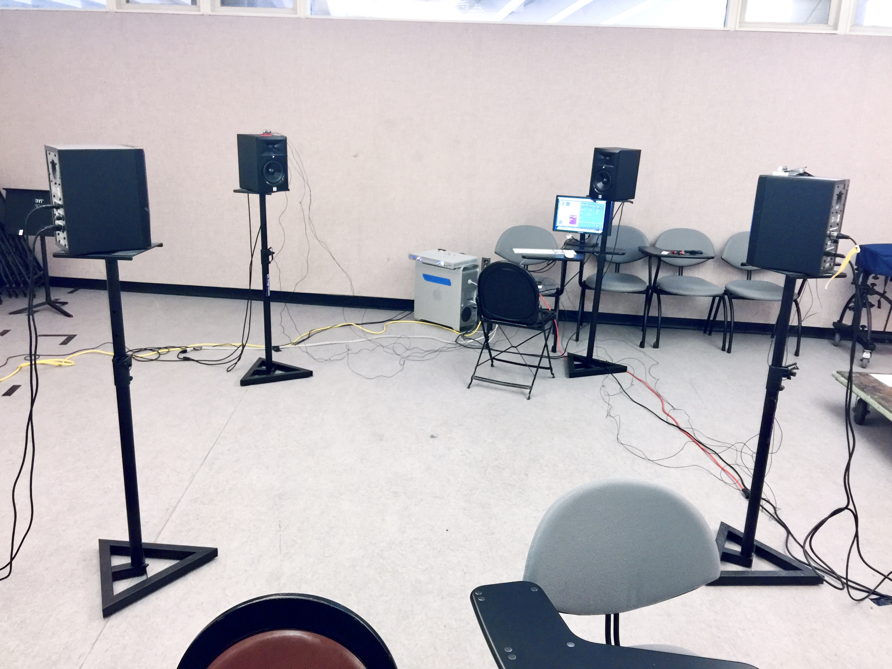
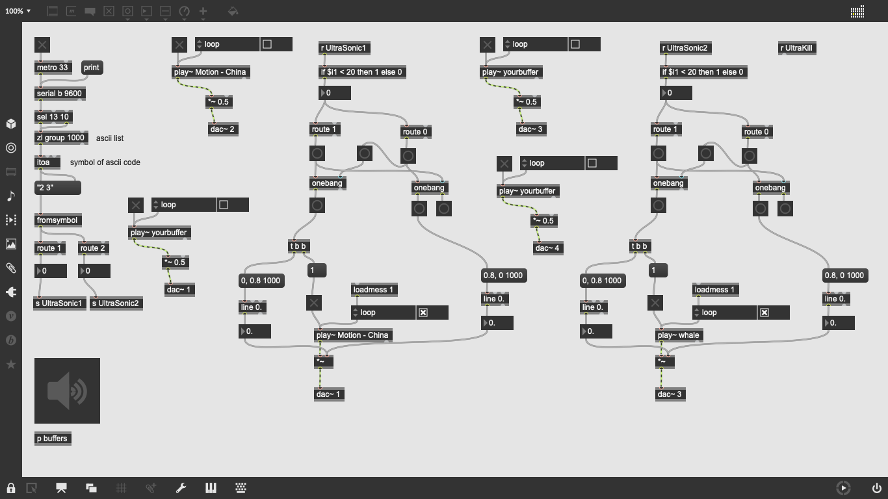

Fall 2016, Computer Music
I was inspired to create this project after amassing a collection of voicemails, interview audio and random recordings of people near and dear to my heart, from around the world. Using Max software, I rigged an Arduino with motion-detecting sensors to four standing speakers, with various triggers depending on user proximity to one or more speakers.
The result: an interactive exhibit of continuously overlapping, unique combinations of voices made open to the public at the Wellesley College Jewett Art Center in December 2016. Only one Arduino was fried in the process.

Immersion into a whole world of conversations. Step between the four speakers, walk around, wave your hands at them - the possibilities are endless. You might hear two speakers arguing with each other over the correct pronunciation of "garage." You might hear a speaker frantically shout in Shanghainese over the noise of a busy subway station. If you lean in carefully, you might even hear a 90-year-old woman recollect how she first met her husband, drunk at a UCLA party, 72 years ago.

Use the images below to play three audio clips from my exhibit. Either play them separately or overlapping to mimic the experience of the in-person display (recommended: click and play all three at once to start).